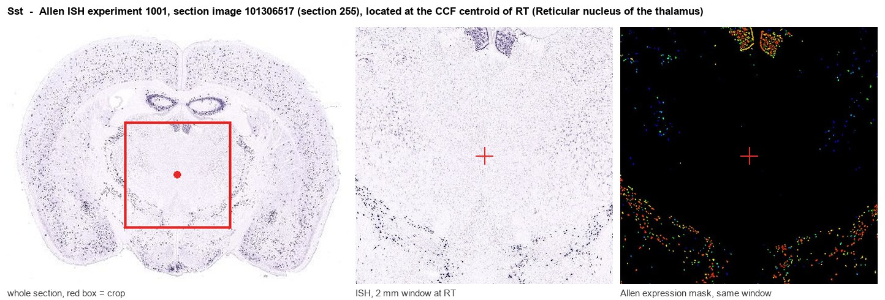
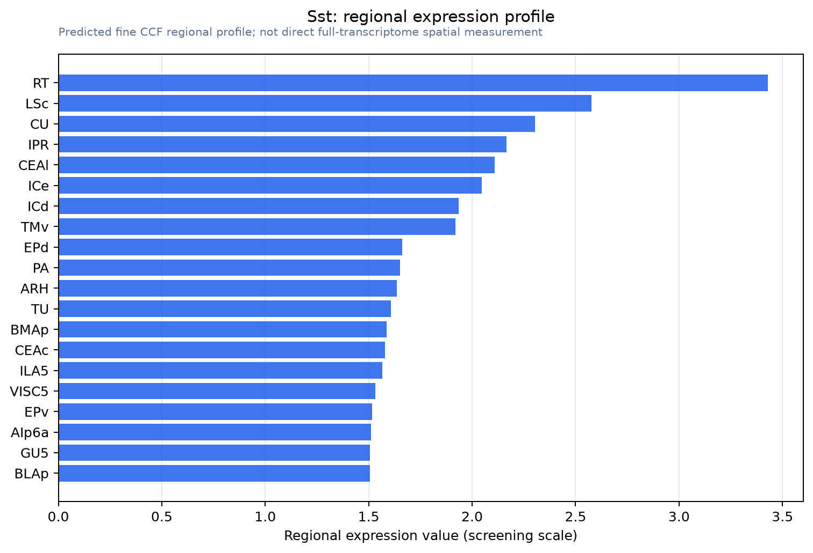

Sst
Spatial tier: RESTRICTED · Class: NEUROMODULATORY_SIGNAL · Top region: RT (Reticular nucleus of the thalamus) · Positive regions: 15/554
43.2Discovery Score
40.0Targetability Score
CEvidence grade C
What this means: Sst: fine CCF profile is restricted toward RT (top regions: RT, LSc, CU, IPR, CEAl; 15 positive regions); direct spatial validation is still required.
Function in RT: evidence, prediction, innovation
- Gene function
- Sst encodes preprosomatostatin, cleaved to the inhibitory neuropeptides SST-14 and SST-28. These act on five Gi-coupled receptors (SSTR1-5) that open GIRK channels and close voltage-gated calcium channels, reducing excitability and transmitter release. Somatostatin is also the defining marker of a large class of GABAergic neurons throughout the forebrain.
- Region function
- The thalamic reticular nucleus is the GABAergic shell of the thalamus, supplying feedback inhibition to relay nuclei, generating sleep spindles and gating attention and sensory transmission.
- Published in this region
- direct Direct. Somatostatin marks a distinct reticular cell type: Clemente-Perez 2017 showed that Sst-expressing and Pvalb-expressing reticular neurons are electrophysiologically and anatomically distinct populations that differentially modulate normal and pathological cortical rhythms, with the Sst subtype concentrated in the calbindin-rich limbic and higher-order sector. Bu 2025 showed that parvalbumin and somatostatin reticular neurons differentially shape visual processing in mouse V1, and Vaughn 2024 described heterocellular electrical coupling linking these functionally distinct reticular subcircuits.
- Predicted function
- Prediction: the peptide itself, as opposed to the Sst-defined cell type, is the open question. Somatostatin released within the reticular nucleus and onto relay neurons should act through SSTR2 to open GIRK channels and deepen the hyperpolarisation that de-inactivates T-type calcium channels, strengthening rebound bursting and lengthening spindles. Conditional Sst deletion restricted to reticular neurons is predicted to leave fast GABAergic inhibition intact but reduce spindle density and sleep-dependent consolidation; the SSTR2 agonist octreotide infused into thalamus should have the opposite effect.
- Innovation
- ★★☆☆☆ 2/5 Sst-defined reticular subtypes are already well characterised, although the peptide's own signalling role within this nucleus remains largely unaddressed.
- Tools
- Sst-IRES-Cre (JAX 013044) and Sst-Flp (JAX 031629), Sst knockout mice and SST reporter lines; SSTR2 agonist octreotide and antagonist CYN-154806; validated anti-somatostatin antibodies; Pvalb-IRES-Cre (JAX 017320) for the complementary reticular subtype.
- References
Direct evidence located at the region

Allen ISH experiment 1001, section image 101306517 (section 255): the section that contains the CCF centroid of Reticular nucleus of the thalamus according to the Allen image-to-atlas alignment (reference_to_image), with a 2 mm window around that point. Left: whole section, red box = window. Middle: ISH signal. Right: Allen's expression-mask view of the same window. open this image in the Allen viewer
Look it up yourself: Allen Mouse Brain ISH for SstAllen reference atlas: RT (structure 262)ABC Atlas MERFISH viewer(in the ABC Atlas choose dataset MERFISH-C57BL6J-638850-CCF, colour cells by gene "Sst" or by parcellation_substructure "RT")All genes confined to RT + 3-D brain
Direct spatial evidence
MERFISH REGION LOCATOR

Regional expression figure

Predicted WMB × fine-CCF profile; not direct full-transcriptome spatial measurement.
Spatial profile
Evidence and specificity
- Evidence status
- PREDICTED_FINE
- Direct sources
- None; predicted localization only
- Exclusive threshold
- 12 positive regions out of 554
- Spatial specificity
- 0.290
- Top-region fraction
- 0.064
- Filter status
- PASS
Interpretation limits
- Cell-type-to-region projection is imputed expression, not direct spatial measurement.
- Adult reference atlases do not establish stability across age, sex, strain, state, or disease.
- Transcript abundance does not guarantee protein abundance or genetic-tool performance.